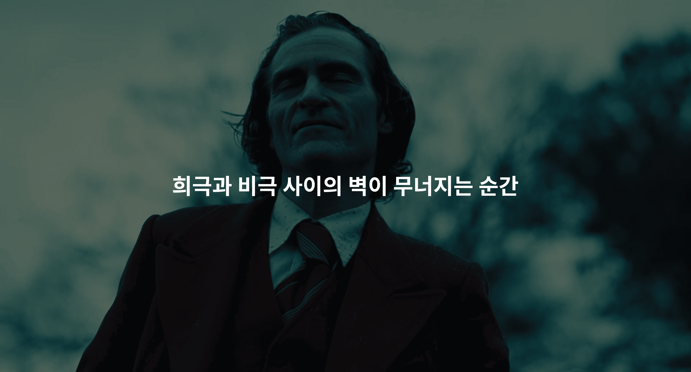

제가 본 영화 중 가장 인상깊은 영화를 소개합니다.
사회에서 소외된 코미디언 지망생 아서 플렉은 정신질환과 빈곤 속에서 고독하게 살아간다.
그는 약물 치료와 상담 지원마저 끊기며 점점 현실과 단절되어 갔다.
일상 속 지속되는 폭력과 조롱 끝에, 지하철에서 자신을 위협하던 남성들을 살해하며
그의 삶은 한 순간에 변하게 된다. 아서는 자신이 믿어온 정체성마저 흔들리며
광기 끝에서 스스로를 '조커'라는 새로운 인물로 받아들인다.
한 사람의 인생이,
그의 믿음, 삶을 지탱하던 기둥이,
세상의 벽이 서서히 무너지며 오는 '아서'의 내면적 변화
모든 것이 무너진 순간 인간이 어떻게 변해 가는지를
너무나 선명하게 보여줬습니다.
그러한 장면이 정말 답답하고 힘든
여러 감정이 몰려오며 연출되었습니다.
그와 동시에 뛰어났던 호아킨 피닉스의 연기로 인해
더욱 몰입 되는 영화였습니다.